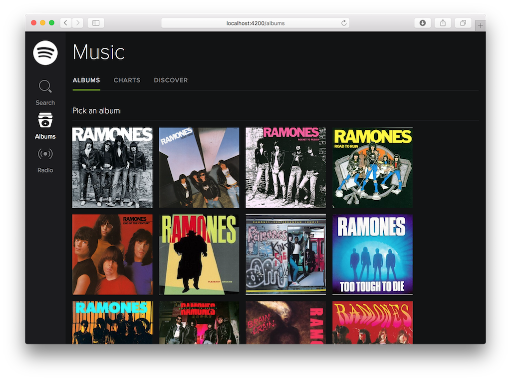

Abril de 2016
- Fecha: 21 de abril de 2016
- Hora: de 19:30 a 22:00
- Participantes: 5

Actividades
Testeando Ember Music
Codificamos entre todos los tests para el Ember Music, un proyecto que surgió del workshop de la JSConf 2015.
Recursos
- JSConf workshop por Santiago y Adrián
- Music API por Santiago y Adrián
- ember-cli-mirage
Participantes
- Adrián Mugnolo (@xymbol)
- Emilio Cristalli (@EmilioCristalli)
- Julio Barrios (@jubar)
- Luis Ferreira (@hidnasio)
- Santiago Ferreira (@san650)
Agradecimiento
Agradecemos a WyeWorks por brindarnos el lugar e invitarnos las bebidas, los snacks y la cena.